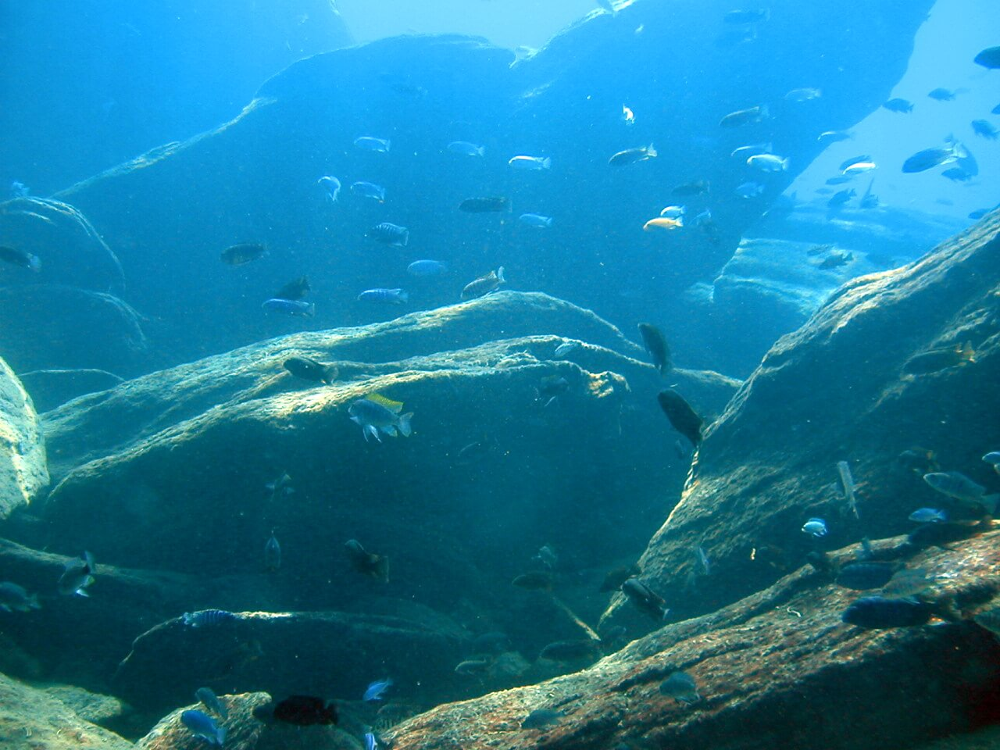
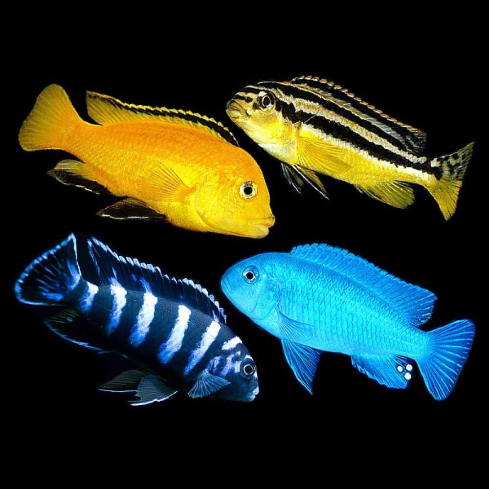

<!DOCTYPE html>
<html lang="en">

</html>

<head>
    <meta charset="utf-8" />
    <title>About and History</title>
    <link rel="stylesheet" type="text/css" href="css/about-history.css">
    <meta name="viewport" />


</head>

<body>

    <div class="whole">

        <div class="heading1">
            <h1>About</h1>
        </div>

        <div class="heading2">
            <h1>Gene</h1>
        </div>


        <div class="image1"></div>
        <div class="image2"></div>

        <div class="container1">
            <ul>
                <h2>
                    <p>About Mbuna Cichlids</p>
                </h2>
                <h4>
                    <li>Mbuna cichlids live in Lake Malawi, the 9th largest lake in the world</li>
                    <li>Mbuna cichlids eat aufswuch, which is mostly algae and small invertebrates and crustaceans that
                        live in the algae</li>
                    <li>Mbuna cichlids have a digestive system that is twice as long as most other fish</li>
                    <li>Mbuna cichlids prefer to dwell in rocks or caves, which is similar to their natural habitat</li>
                    <li>When given hard, alkaline water and a healthy tank environment, Mbuna cichlids typically live
                        for 8-10 years</li>
                    <li>Cichlids can range in size from 2.5 cm (1 in) to 1 m (3 ft) in length</li>
                </h4>
            </ul>
        </div>


        <div class="container2">
            <ul>
                <h2>
                    <p>Mbuna and their Bloodline</p>
                </h2>
                <h4>
                    <li>The oldest cichlid fossils are only about 45 million years old. That leaves about 90 million
                        years
                        of cichlid history unaccounted for</li>
                    <li>The fossil record is spotty, so it seemed possible that older cichlid fossils just hadn't been
                        discovered yet</li>
                    <li>Lake Malawi contains a flock of >500 species of cichlid fish that have evolved from a common
                        ancestor within the last million years,
                        Of that Mbuna consist of 13 genera and over 300 species</li>
                    <li>Lake Malawi cichlids exhibit spectacular diversity in trophic morphology, including specialist
                        algal
                        scrapers, planktivores, insectivores,
                        piscivores, paedophages, snail crushers, and fin biters</li>
                    <li>Mbuna cichlids are maternal mouthbrooders, which means that they lay eggs that are taken into
                        the
                        female's mouth to be incubated, hatched, and then spat out as fry.</li>
                    <li>Cichlids entered Malawi via its tributaries, with two tribes — the tilapiines and the
                        haplochromines
                        — taking up permanent residence there</li>
                </h4>
            </ul>
        </div>

</body>

<div class="home"><a href="index.html">Home</a></div>
<div class="next"><a href="location-temperment.html">Next Page</a></div>


</div>